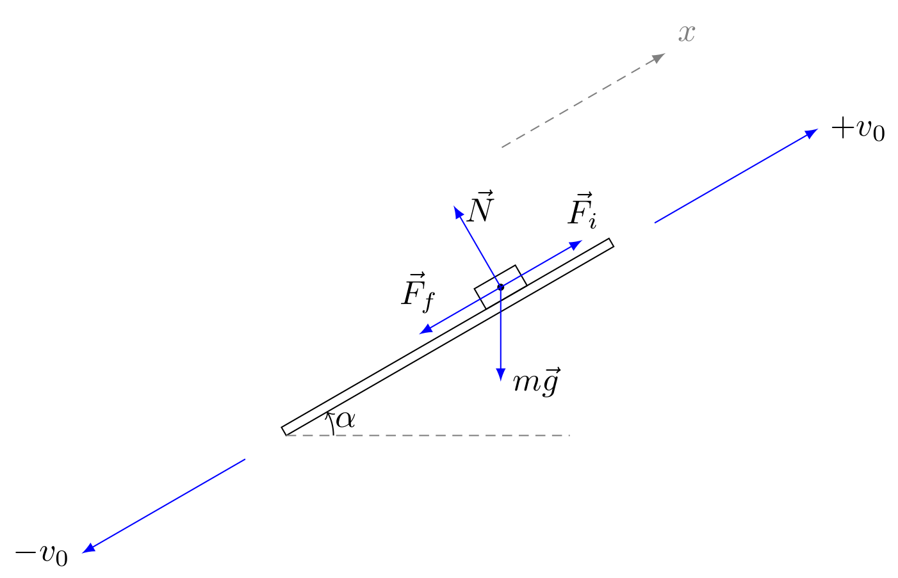

This problem comes from the problem book by Savchenko et al. which I mentioned in the blog before. It is the last problem on harmonic oscillations in the edition I have (3.30*). Since I am posting it here, it means that the solution took me quite long time and I have still some points that are not completely clear to me (hoping someone will comment and clarify it for me :-)).
Problem statement
Consider an inclined plane at an angle $\alpha$ with respect to the horizon. The plane is oscillating harmonically at high frequency along the axis ($x$) parallel to its surface and making the same angle $\alpha$ with the horizon (as shown in Fig. 1). The maximum speed of the oscillating plane is $v_0$. An object is then placed on the inclined plane. The friction coefficient between the plane and the object is $\mu$. Assuming that $\mu \gg \tan\alpha$ determine how would the object move and its mean velocity after a long period of time.

Fig. 1: Oscillating inclined plane with the mass on it, forces are shown at the moment when the object is sliding up the plane with the inertia force directed upwards.
Link to the latex source of the figure
Solution
We will consider the object in the reference frame tight to the oscillating plane. In this reference frame there would be the inertial force (varying harmonically) acting on the object and the object will oscillate up and down the inclined plane. Since the frequency of the oscillations of the plane is high, then we can consider that there are only two states of the object: it is moving upwards and downwards with respect to the plane. So the object will be oscillating on the plane up and down.
Let's take $T$ to be the period of the oscillating motion of the object. Which is equal to the period of oscillations of the plane.
Let's denote:
Let's consider projections of forces acting upon the object on the $x$-axis parallel to the inclined plane:
$$ F_x = \pm\,\mu m g \cos\alpha - m g \sin\alpha - m\omega v_0 \cos\left( \omega t + \phi_0 \right) $$The last term of the equation above is the force of inertia, assuming that the velocity of the inclined plane varies according to the formula $v(t)=v_0\sin\left( \omega t + \phi_0 \right)$. Since the object is sliding, there is the friction force $F_f=\pm\,\mu N = \pm\,\mu m g\cos\alpha$ acting on the object in the direction opposite to its velocity.
Eventually, after a long time the change of momentum during each period $T$ would be 0 (stationarity condition):
$$ \Delta p = \int_{0}^{T}dp = \int_{0}^{T}{F_x}{dt} = 0 \tag{1} $$Substituting the $F_x$ into the expression above:
$$ -m g T \sin\alpha - \mu m g t_1 \cos\alpha + \mu m g t_2 \cos\alpha = 0 $$$$ - T \sin\alpha - \mu t_1 \cos\alpha + \mu \left( T - t_1 \right) \cos\alpha = 0 \Rightarrow \boxed{t_1 = \frac{T}{2} \left( 1 - \frac{\tan\alpha}{\mu} \right)} $$By definition the mean velocity is:
$$ \overline{v} \;\equiv\; \frac{1}{T}\left[\int_{0}^{t_1}{v_1(t)}{dt} + \int_{t_1}^{T}{v_2(t)}{dt} \right] \tag{2} $$Let's determine the functions $v_1(t)$ and $v_2(t)$.
Let's note that the velocity should be 0 at the turning points, therefore:
$$ v_1(0) = v_1(t_1) = v_2(t_1) = v_2(T) = 0 $$Applying the second Newton's law the velocity time derivatives can be expressed as:
$$ \begin{split} d_t v_1(t) & = -\mu g \cos\alpha - \omega v_0 \cos\left( \omega t + \phi_0 \right), t\in[0, t_1] \\ d_t v_2(t) & = \mu g \cos\alpha - \omega v_0 \cos\left( \omega t + \phi_0 \right), t\in[t_1, T] \end{split} $$Here we neglected the projection of the gravity force ($F_{gx} = -mg\sin\alpha$) as it is much smaller than the force of friction, according to the problem statement.
Integrating the equations for acceleration and using the 0-velocity conditions at turning points, we get:
$$ \begin{split} v_1(t) & = -\mu g t \cos\alpha - v_0 \sin\left(\omega t + \pi \right), t\in[0, t_1] \\ v_2(t) & = \mu g (t - t_1) \cos\alpha - v_0 \left(\sin\left( \omega t + \pi \right) - \sin\left( \omega t_1 + \pi \right)\right), t\in[t_1, T] \end{split} $$$\phi_0=\pi$ follows from the equations $v_1(0) = 0$ and $v_1(t_1)=0$.
Finally, by substituting the expressions for $v_1(t)$ and $v_2(t)$ we get:
$$ \begin{split} \overline{v}\cdot T & = \int_{0}^{t_1}{-\mu g t \cos\alpha}{dt} + \int_{t_1}^{T}{\mu g (t - t_1) \cos\alpha}{dt} - \int_{0}^{t_1}{v_0 \sin\left( \omega t + \pi \right)}{dt}\\ & - \int_{t_1}^{T}{v_0 \sin\left( \omega t + \pi \right)}{dt}+\int_{t_1}^{T}{v_0 \sin\left( \omega t_1 + \pi \right)}{dt}\\ \end{split} $$By simplifying and integrating, we get:
$$ \overline{v}\cdot T = -(T-t_1) v_0 \sin\left( \omega t_1 \right) $$then substituting $t_1$ and using the equation $\omega \cdot T = 2\pi$:
$$ \begin{split} \overline{v} \cdot T & = -\left(\frac{T}{2} + \frac{\tan\alpha}{\mu}\right) v_0 \sin\left(\pi - \frac{\tan\alpha}{\mu} \pi \right) \\ & = -v_0 \left(\frac{T}{2} + \frac{\tan\alpha}{\mu}\right) \sin\left(\frac{\tan\alpha}{\mu} \pi \right) \\ & \approx -v_0 \frac{T}{2} \frac{\tan\alpha}{\mu} \pi \end{split} $$Then the final expression for the mean velocity is:
$$ \boxed{\overline{v} = -v_0 \frac{\tan\alpha}{2\mu} \pi} $$Reflections
Let's double check that $v_1(t_1)=0$, i.e.,
$$ -\mu g t_1 \cos\alpha - v_0 \sin\left(\omega t_1 + \pi \right) = 0 $$
Substituting $t_1$:
$$ -\mu g \frac{T}{2} \left( 1 - \frac{\tan\alpha}{\mu} \right) \cos\alpha + v_0 \sin\left(\omega \frac{T}{2} \left( 1 - \frac{\tan\alpha}{\mu} \right) \right) = 0 $$
Simplifying: $$ -\mu g \frac{T}{2} \left( 1 - \frac{\tan\alpha}{\mu} \right) \cos\alpha + v_0 \sin\left(\pi\frac{\tan\alpha}{\mu}\right) = 0 $$
Using the approximation $\frac{\tan\alpha}{\mu} \ll 1$:
$$ -\mu g \frac{T}{2} \cos\alpha + v_0 \pi\frac{\tan\alpha}{\mu} = 0 $$
Well, it seems that in order to have $v_1(t_1) = 0$, it is necessary that the period of oscillation be:
$$ T=v_0 2\pi\frac{\tan\alpha}{\mu^2 g\cos\alpha} $$
This makes me uncomfortable with the solution and the problem statement. Maybe there is something more to the motion described in the problem than I understand...
It is very easy to verify as well that $v_2(T) = 0$, assuming that $t_1\approx T/2$.
$$ \begin{split} v_2(T) & = \mu g (T - t_1) \cos\alpha - v_0 \left(\sin\left( \omega T + \pi \right) - \sin\left( \omega t_1 + \pi \right)\right) \\ & = \mu g (T - t_1) \cos\alpha + v_0\sin\left( \omega t_1 + \pi \right) \end{split} $$
Then using the condition $v_1(t_1)=0$, we get $$ v_2(T) = \mu g (T - t_1) \cos\alpha - \mu g t_1 \cos\alpha \approx 0 $$